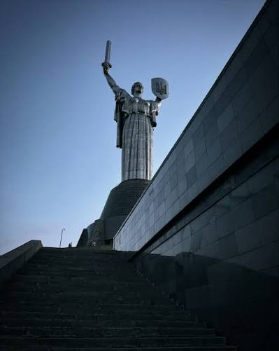

Визначні пам'ятки

Одне з найстаріших місць, де відчувається дух давнини...
Кухня та гастрономія
Справжній київський торт та перепічка — це те, що обов'язково варто спробувати!
Особисті історії
Нічна прогулянка Хрещатиком разом із друзями стала найяскравішим спогадом тієї подорожі.